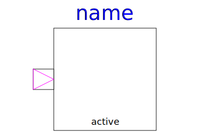

Note, there is a much improved version of this library called "Modelica_StateGraph2". If this library is not yet distributed with your Modelica tool, you can download it from https://github.com/modelica/Modelica_StateGraph2. In the Users Guide a detailed comparison is given. It is highly recommended to use Modelica_StateGraph2 instead of Modelica.StateGraph.
Library StateGraph is a free Modelica package providing components to model discrete event and reactive systems in a convenient way. It is based on the JGrafchart method and takes advantage of Modelica features for the "action" language. JGrafchart is a further development of Grafcet to include elements of StateCharts that are not present in Grafcet/Sequential Function Charts. Therefore, the StateGraph library has a similar modeling power as StateCharts but avoids some deficiencies of StateCharts.
For an introduction, have especially a look at:
A typical model generated with this library is shown in the next figure where on the left hand side a two-tank system with a tank controller and on the right hand side the top-level part of the tank controller as a StateGraph is shown:
The unique feature of the StateGraph library with respect to JGrafcharts, Grafcet, Sequential Function Charts, and StateCharts, is Modelica's "single assignment rule" that requires that every variable is defined by exactly one equation. This leads to a different "action" definition as in these formalisms. The advantage is that the translator can either determine a useful evaluation sequence by equation sorting or reports an error if this is not possible, e.g., because a model would lead to a non-determinism or to a dead-lock. As a side effect, this leads also to simpler and more easier to understand models and global variables are no longer needed (whereas in JGrafcharts, Grafcet, Sequential Function Charts and StateCharts global variables are nearly always needed).
Copyright © 1998-2019, Modelica Association and contributors
| Name | Description |
|---|---|
| User's Guide of StateGraph Library | |
| Examples to demonstrate the usage of the components of the StateGraph library | |
| Connectors and partial models | |
| Initial step (= step that is active when simulation starts) | |
| Initial step (= step that is active when simulation starts). Connector 'active' is true when the step is active | |
| Ordinary step (= step that is not active when simulation starts) | |
|  StepWithSignal | Ordinary step (= step that is not active when simulation starts). Connector 'active' is true when the step is active |
| Transition where the fire condition is set by a modification of variable condition | |
| Transition where the fire condition is set by a Boolean input signal | |
| Alternative splitting of execution path (use component between two steps) | |
| Parallel splitting of execution path (use component between two transitions) | |
| Superclass of a subgraph, i.e., a composite step that has internally a StateGraph | |
| Root of a StateGraph (has to be present on the highest level of a StateGraph) | |
| Components that will be provided by other libraries in the future |